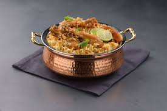

Lasanga

Description
Chicken biryani is a delicious Pakistani/Indian rice dish that's typically reserved for special occasions such as weddings, parties, or holidays such as Ramadan.
It has a lengthy preparation, but the work is definitely worth it. For biryani, basmati rice is the ideal variety to use.
Ingredients
- Eggs
- Onions
- Garlic
- Chicken
- Vegetables
- Basmati rice
Steps
- Step 1: Gather the ingredients
- Step 2: Heat 2 tablespoons of oil
- Step 3: Add onions, garlic, and fresh ginger
- Step 4: Stir in yogurt, mint, ground cardamom, and cinnamon stick
- Step 5: Add chicken and stir well to coat
- Step 6: Cook rice
- Step 7: Add chicken and other vegetables
Home